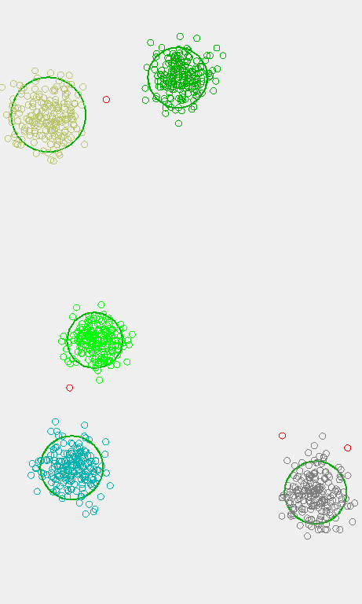
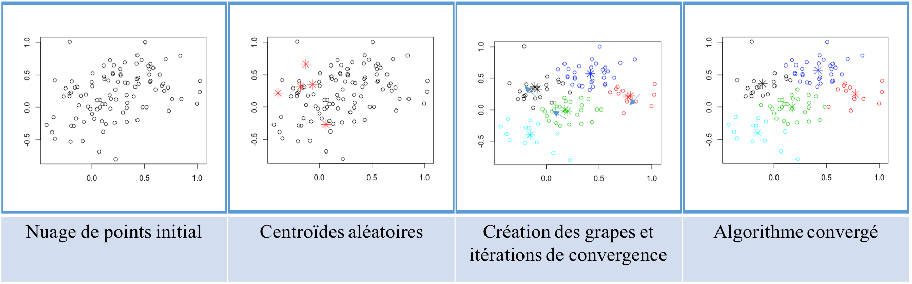
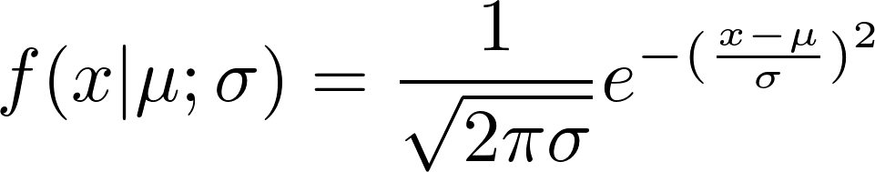
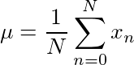
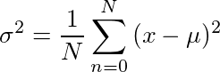

Concepts scientifiques
Regroupement
Introduction
Pour l’analyse, la multitude de données levées lors de la simulation, il est nécessaire de réduire leur nombre. Pour ce faire, nous utilisons des algorithmes de groupement de valeur qui permet de regrouper les données qui sont similaires l’une à l’autre. Ces algorithmes sont utilisés trois fois : lors de la traduction des évènements à partir des fichiers sources ; sur les évènements obfusqués durant la phase d’analyse ; et finalement durant l’extraction des résultats pour comparer les évènements initiaux et les évènements finaux.
En premier lieu, nous regroupons pour la traduction des évènements. Dans la simulation, chaque véhicule, lève un évènement à chaque pas de simulation. L’idée est qu’un évènement qui est à proximité d’un autre qui est suffisamment similaire a probablement la même source, et devrait n’être levé qu’une fois pour le traitement. La traduction des fichiers de données provenant du simulateur est effectuée en utilisant un algorithme de regroupement très élémentaire, car la fiabilité des données initiales est grande et celles-ci suivent toutes une organisation particulière. L’algorithme utilisé fusionne les évènements qui sont du même type, du même véhicule, suffisamment proche spatialement et suffisamment proche temporellement.
En deuxième lieu, l’analyse des évènements regroupe les évènements obfusqués semblables. L’algorithme de regroupement utilisé est OPTICS.
En troisième lieu, l’extraction des résultats utilise du regroupement pour associer chaque évènement initial aux évènements finaux. L’approche utilisée est de simplement associer l’évènement final à l’évènement initial le plus proche et de même type.
OPTICS
Le but d’OPTICS (« Ordering points to identify the clustering structure» ) est de créer une grappe, un ensemble d’évènements, en se basant sur deux critères :
- la grappe contient suffisamment de points;
- les points de la grappe sont assez proches les uns des autres.
Une fois une grappe générée, l’algorithme essaie de rajouter des éléments valides à celle-ci. Pour chacun des données restantes, l’algorithme recommence du début, en créant une autre grappe. L’avantage de cette méthode est que l’algorithme ne nécessite pas que les données aient une distribution particulière. Par exemple, lors d’un embouteillage, la position des véhicules, donc la position des évènements, est analogue à la disposition des routes, car l’évènement n’est pas ponctuel, c’est-à-dire concentré à un seul endroit, mais s’étale sur une longue surface. Dans certains cas, la distribution des données est aléatoire, chaotique et inconnue par la plateforme de traitement ce qui fait d’OPTICS un algorithme parfaitement adéquat. Dans le monde physique, il est cependant raisonnable de s’attendre à ce que certains évènements soient distribués de façon gaussienne. Cela permettrait à d’autres algorithmes spécialisés de donner plus d’information lors de l’analyse comme «Expectation Maximisation». OPTICS permet donc de faire l’analyse des données de façon satisfaisante, pour toute distribution statistiques, même les normales.
K-Moyenne
Cet algorithme est un des plus élémentaires de l’exploration de données. Il consiste à déterminer une liste de points (appelé centroïdes) qui, à l’aide d’un processus itératif, converge vers les points où il y a des regroupements de données. Chaque itération est composée de deux étapes. Premièrement, chacune des données est associée au centroïde le plus proche. Ensuite, chaque centroïde est déplacé à la moyenne vectorielle des positions des données associées au centroïde. Après quelques itérations, la position des centroïdes n’est plus modifiée. On dit alors que l’algorithme a convergé et que les grappes sont définies par l’ensemble des points qui est associé à chaque centroïde, comme à la première étape d’itération. Cette méthode de regroupement s’est prouvée incapable d’analyser nos données puisqu’il faut prédéterminer le nombre de centroïdes initial (un inconnu de la situation) et que l’algorithme ne converge pas toujours comme on pourrait penser. Dans un cas où il y a un nombre faible de distribution normale grandement espacée, comme c’est le cas avec nos simulations, il est fréquent qu’une distribution n’ait pas un unique centroïde associé. Dans ces cas, un centroïde n’est pas utilisé (il « meurt » parce qu’il n’a aucune donnée associée), ce qui fait en sorte qu’un autre centroïde ira se placer à mis chemin entre deux distributions.
Graphes
Introduction
Une des facettes les plus importantes de notre projet est le calcul du chemin optimal en fonction des évènements détectés par le traitement. Pour y parvenir, de nombreux algorithmes existent dans la littérature. La plupart d’entre eux reposent sur la notion de graphe.
La définition la plus simple d’un graphe est une liste de sommets et d’arêtes. Une bonne façon de visualiser ce concept est d’imaginer des objets dont certains sont interconnectés. Les objets sont les sommets et les connexions entre chacun sont les arêtes.
Afin de déterminer le chemin le plus court, le réseau routier doit être converti en multigraphe pondéré et orienté, ce qui veut dire que chaque arête a un poids, représentant le cout pour se déplacer d’un côté à l’autre de celle-ci et une orientation empêchant le déplacement dans le sens opposé. La modélisation classique représente les intersections entre les routes comme les sommets du graphe et les routes, les arêtes. Le poids des arêtes est déterminé par deux facteurs principaux. Le premier est la somme des longueurs euclidiennes de chaque élément de route, c’est-à-dire la longueur de la route. Le deuxième est la vitesse à laquelle il est le plus probable que le véhicule ait sur la route. Le ratio de ces deux facteurs donne le temps estimé pour le parcours de la route : c’est le poids de la route.

A*
L’algorithme utilisé dans notre plateforme se base sur l’algorithme A* qui évalue la route la plus courte vers une destination en explorant les plus courts chemins intermédiaires enregistrés dans une liste. Ce qui différencie A* de l’algorithme de Dijkstra est l’ajout d’une heuristique supplémentaire, c’est-à-dire un nombre entier agissant comme un poids d’arête, qui a pour effet d’orienter la recherche directement vers la destination. Le facteur heuristique que nous avons déterminé pour guider la recherche de chemin est la distance euclidienne entre les sommets et la destination.
Statistiques
Distribution normale
Dans la nature, selon le théorème central limite, lorsque nous regroupons plusieurs données indépendantes et de mêmes types, nous obtenons une approximation de la distribution gaussienne ou normale. Cette distribution peut être modélisée par la fonction suivante :
où µ représente la moyenne de la distribution et σ représente l’écart-type.
Moyenne

La moyenne d’un ensemble de données est la somme de chaque élément divisée par le nombre d’éléments. Cette notion peut être utilisée sur les vecteurs avec la même définition.
La moyenne d’un ensemble de vecteurs est donc un vecteur dont la composante x est égale à la somme de chaque composante x des vecteurs de l’ensemble divisée par la cardinalité de l’ensemble. La composante y est calculée similairement.Par la suite, l’utilisateur dispose de deux choix pour spécifier les fichiers de simulation à inclure.
Écart type

L’écart type d’un ensemble de données est la racine carrée de la moyenne de l’ensemble des différences de chaque élément de la moyenne élevée au carré. Pour calculer l’écart type, il faut donc :
- Trouver la moyenne de l’ensemble.
- Calculer la différence de chaque élément à la moyenne.
- Élever chacune de ces différences au carré.
- Faire la moyenne de l’ensemble obtenu à l’étape 3.
- Faire la racine carrée de cette moyenne.
Cette valeur mesure l’« éparpillement » des données. Plus cette valeur est élevée, plus les données sont loin l’une de l’autre. Dans une distribution normale, 68.268 % des données sont à moins de 1 écart type de la moyenne, et 95.449 % sont à moins de 2 écarts types.